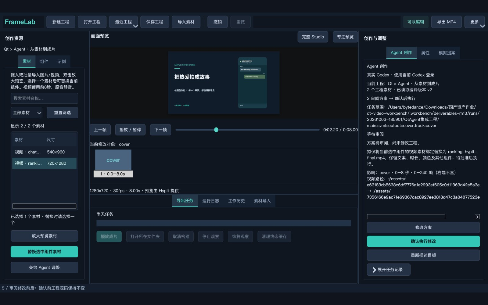
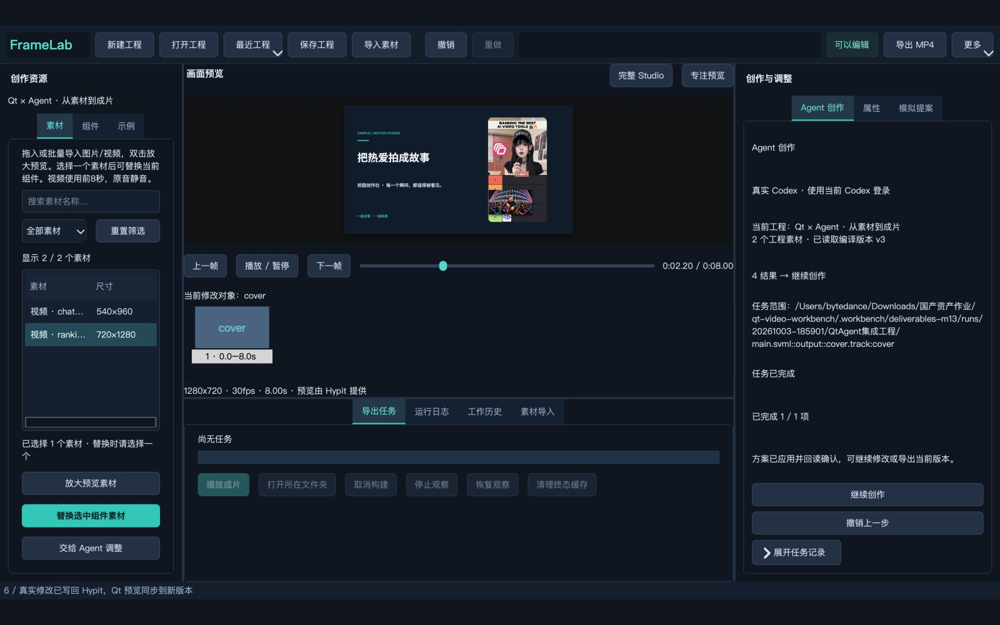
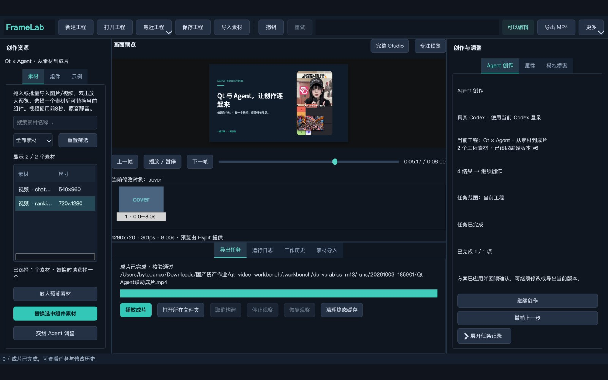

Qt × Agent 完整操作录制
81.533 秒 · 1600 × 1000 · 程序驱动真实窗口；保留等待时间
scripted production widgets/signals; production AgentWorkbenchBridge; actual Codex/Hypit
下载视频从真实素材到可审阅方案，再到实际成片。以生产窗口、当前 Codex 登录与本地 Hypit 执行结果为依据。
实现可运行的 Qt 6 Widgets 视频创作工作台，贯通工程管理、素材选择、自然语言提案、显式审阅批准、预览同步和本地视频导出。重点检验 Qt 操作与 Agent 的实际协作，以及修改权限和导出成功语义。
本次实验由 Qt Test 脚本驱动生产窗口控件与信号，共用应用正式使用的 AgentWorkbenchBridge；模型为当前 Codex CLI 登录会话，编译、预览及渲染使用真实本地 Hypit。窗口录像来自本应用 MainWindow，保留实际帧间隔和模型等待时间；不是手工操作录像。
Qt UI（MainWindow / AgentPanel） → AgentWorkbenchBridge → AgentController → ContextBuilder / ModelClient → Codex JSON 提案 → PlanReview / ApprovalManager → ToolDispatcher / EditorController → Hypit Studio；导出由 ExportController 顺序执行 plan、build、get、ffprobe 与全片解码。
原创部分包括 Qt 窗口、工程与素材管理、模板、属性编辑、Agent 上下文与提案校验、版本/批准约束、异步任务状态及交付验收。复用部分包括 Hypit 视频语言、编译与渲染、Studio 预览服务、Qt 框架、Codex CLI 和 FFmpeg；官方示例视频单独保留来源。
版本依据：仓库 config/version-lock.json 固定 Qt 6.11.2、Hypit 0.2.10、C++ 17，平台记录为 macOS 15.7.7 / arm64。这些是项目固定版本记录；本次媒体验证工具版本另见 source-manifest.json。报告生成时间：2026-10-03T11:08:01.592452+00:00。
在素材列表中选择一个可见且兼容的已登记素材后，“交给 Agent 调整”将真实素材绑定值写入目标输入，并限定到当前组件。多选、不兼容或任务忙碌等状态禁止交接。交接只准备目标；生成方案与批准执行分别由按钮触发。
AgentWorkbenchBridge 连接 generateRequested、scopeChanged、selectionChanged 和 approveRequested 等信号。AgentController 把当前工程、真实 entityId/fieldId、可写属性、版本指纹及登记素材交给 ContextBuilder。ModelClient 获取符合 JSON Schema 的提案；模型不直接执行本地编辑命令。
方案进入审阅后展示拟修改内容。ApprovalManager 管理批准，执行链再次校验方案、允许范围和版本，再由 ToolDispatcher / EditorController 写入 Hypit。实验断言批准前源码未变，并在执行后等待预览指纹与新源码一致。
本轮上下文只提供素材名称、类型、尺寸与绑定等结构信息，imagePixelsProvided=false；没有上传图片像素，也不将提案描述解释为模型看过视频画面。
ExportController 冻结当前输入，先验证本地运行计划，再核对 Build 状态和精确 Output；只有媒体参数验证及全片解码完成后才进入 complete。付费渲染 Provider 请求不通过导出计划门禁。
1. 准备固定版本 Hypit、Qt、FFmpeg 与当前已登录 Codex CLI；生成并验证本地官方素材目录，应用启动读取本地 catalog.json。
2. 查看示例库，从本地 Hypit 对话样例创建 video-story 工程，等待 Studio 会话与预览确认，并在 Qt 内播放。
3. 导入官方排行榜视频，选中兼容组件和素材，点击“交给 Agent 调整”，检查目标中出现实际素材路径。
4. 点击生成方案，等待真实 Codex 响应。审阅素材替换提案，确认源码尚未改变，再显式批准并等待新版本预览。
5. 输入“只把当前视频组件标题改为‘Qt 与 Agent，让创作连起来’，其它文字、视频素材、时长和颜色都保持不变。”再次生成、审阅并批准。
6. 导出成片，等待计划、构建、输出获取和媒体解码完成，检查任务与工作历史。运行报告脚本，把验证后的素材、录像、成片与证据复制到交付目录。
最终演示结论：PASS，包含 2 次真实模型请求和 2 次脚本显式批准。这是最终演示的计数，不代表开发及重录期间的请求总量。批准前源码不变、成片全片解码、窗口录像全片解码及自有 Studio 关闭均由演示断言通过。Build ID：bld_20261003T110001925Z_2908E777F3。
交付脚本对复制后的全部 7 个视频重新计算 SHA-256 并运行 ffprobe；对完整操作录像、工程成片和本地对话样例重新执行全片解码，四个官方视频则通过预先记录的 SHA-256 绑定其已有解码证据。实际成片为 8.000 秒、1280 × 720，包含 1 条音频流。video-story 模板设计为 8 秒静音视频卡。
来源清单中的上游本地视频共 3 个文件，对应 1 个不同 SHA-256。新增官方素材按哈希验证为 4 个不同视频；短于 8 秒的访谈片段仅供示例播放，不能直接满足当前视频模板时长。
本报告呈现这一条真实演示流程的断言与媒体校验结果；不据此声称所有用户输入、模型回答或全部平台均已验证。完整自动化测试集的结果应查阅仓库独立测试证据。
失败与恢复边界：模型失败、澄清或过期方案不会自动批准；Studio 409 冲突与 422 回滚按既有恢复流程处理；导出各阶段失败不能显示成功。本次 PASS 记录未包含故障注入，不宣称这些异常路径在本次录像中被逐一演示。
录制修正：首轮窗口采集保留了 Retina 图像的设备像素比，导致窗口画面只占编码画布的一部分。采集器在缩放后归一化设备像素比，并重新运行完整真实演示。交付视频取修正后的录制，首轮模型请求不计入上面的最终演示次数。
| 验证项 | 结果 | 证据 |
|---|---|---|
| 真实集成演示 | PASS | agent-workbench-demo.json |
| Codex 请求 / 显式批准 | 2 / 2 | materialPlan、titlePlan |
| 批准前源码不变 | 通过 | sourceUnchangedBeforeApproval |
| 像素上传 | 未上传 | pixelsUploaded=false |
| 实际编译版本 | b80ba58f7af76e7cb095dada30eddfb9fceec390be80c4df892ac3241a96d325 | previewFingerprint |
| 成片与录像全片解码 | 通过 | 演示断言 + 交付副本重新解码 |
| 自有 Studio 已关闭 | 通过 | ownedStudioStopped |
完整窗口录制：81.533 秒，408 个原始采集帧，实际采集经过 81.456 秒。每个阶段时间来自演示 JSON；编码成片与采集时间可能因最后一帧保持和编码取整略有差异。
本节提供完整操作录制、导出成片及官方/本地示例。HTML 视频直接读取随报告提供的 videos 文件夹，无需联网；Word 中的视频链接指向同一相对路径，建议保留整个交付目录一起移动。
官方示例由 Hypit 提供，用于展示与本地实验，不计入本工作台原创视频成果。source-manifest.json 记录官方 URL、压缩包成员、原始路径、哈希与本次验证参数；工程输出的源素材归属仍属于其原来源。
81.533 秒 · 1600 × 1000 · 程序驱动真实窗口；保留等待时间
scripted production widgets/signals; production AgentWorkbenchBridge; actual Codex/Hypit
下载视频8.000 秒 · 1280 × 720 · 8 秒静音视频卡
本工作台原创 video-story 模板；素材复用 Hypit 官方排行榜示例
下载视频137.067 秒 · 1080 × 1920 · 官方示例素材
下载视频7.033 秒 · 720 × 1280 · 官方示例；仅预览（不足 8 秒）
下载视频10.033 秒 · 720 × 1280 · 官方示例素材
下载视频9.033 秒 · 720 × 1280 · 官方示例素材
下载视频8.000 秒 · 540 × 960 · 复用本地上游样例；原有重复文件仅计一份
固定版本 Hypit 本地 output/chat-demo.mp4
下载视频


实验把 Qt 的素材操作与自然语言 Agent 请求连接到同一条可审阅执行链，实际完成素材替换、标题修改、预览确认和本地成片导出。源码指纹与显式批准共同约束执行时机，导出验证区分了命令接受、构建完成、输出获取和视频可解码。
当前限制：模型依赖现有 Codex 登录及响应可用性；本轮为单一工程的两次受限编辑；不提供视频视觉理解证据；视频模板固定取前 8 秒且静音。完整录像由程序驱动真实 UI，不用于证明人工可用性评测。后续可增加更多实际任务、异常恢复实验以及长视频与音频模板。